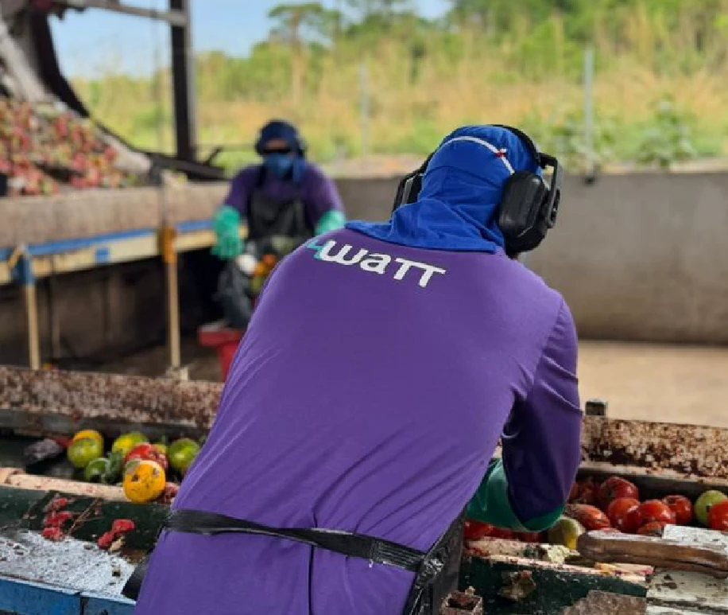
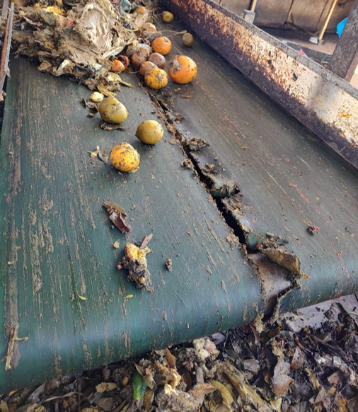
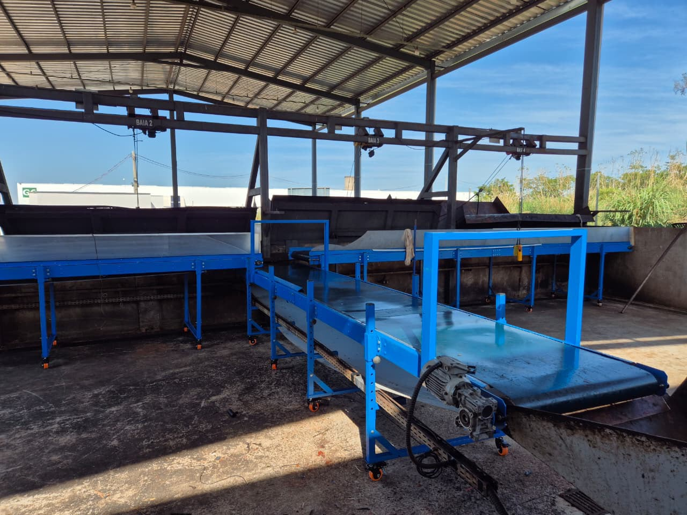
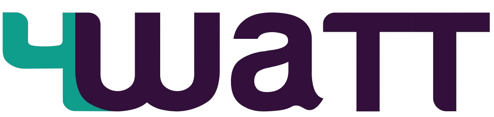
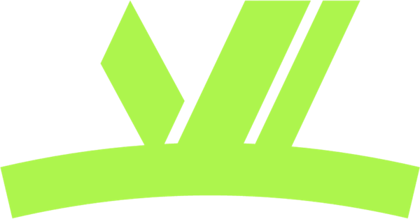
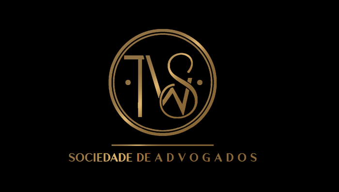

Visita ao ecossistema · 15/10/2026Quinta-feira, 15 de outubro de 2026
Você veio conhecer a 4WaTT, e vai ver mais do que isso. Engenharia, energia, estrutura jurídica e capital trabalham juntos para tirar projetos de biogás e biometano do papel e mantê-los operando. Hoje você vê esse ecossistema em campo: um projeto em implantação e uma operação já entregue.
Ao fim da tarde, vamos conversar sobre como participar desse ecossistema por meio do nosso fundo de infraestrutura. Saiba mais ↓
Programação
Toque em cada parada para ver o que esperar. Os horários com ~ são previsões calculadas a partir dos tempos de deslocamento e podem variar com o trânsito e o andamento das visitas.
O que esperar
Você verá projetos em estágios diferentes: um em implantação e outro já entregue e em operação. Assim fica claro como cada empresa do grupo entra em cada fase, e como isso se conecta ao retorno do investimento.
No 4W WTE Organo Buritis você acompanha uma obra real: engenharia, cronograma e a escala da estrutura.
A CEASA Goiás mostra como fica um ativo depois da atuação da 4WaTT, com o antes e depois da operação.
Na CEASA Goiás você conhece a ponta de entrada: de onde vem a matéria-prima e como ela é tratada.
Nosso time técnico acompanha todo o trajeto. Perguntas sobre retorno, risco e prazos são bem-vindas em qualquer parada.

Resíduo orgânico entra, é triado e vira energia. Você vai ver esse processo acontecendo, com a equipe que opera os ativos no dia a dia.
Projeto entregue


AntesDepoisHoje você conhece a CEASA Goiás por dentro. Este é um projeto já entregue: a operação foi reorganizada, a estrutura foi modernizada e o resíduo passou a ser tratado com método. Arraste o controle para ver a diferença.
Ver o case completo ↗Pontos de atenção
Trajeto
Arraste o controle ou toque em play para percorrer a rota. Toque em uma parada para ver detalhes e abrir a localização.
Rota real: 221 km e cerca de 3h58 de estrada, somando ida, trecho até a CEASA e retorno. Os horários são estimativas e dependem do trânsito. Abrir rota completa no Google Maps ↗
O ecossistema
Cada empresa resolve uma parte do caminho entre um resíduo e um ativo que gera energia. Juntas, reduzem risco para quem investe: o projeto é pensado, estruturado e operado dentro do mesmo grupo.

Projeta, constrói e opera usinas de biogás, biometano e gaseificação, da pré-viabilidade à operação.
OportunidadeUma carteira de projetos com engenharia própria, em estágios diferentes, como os que você vê hoje.
4watt.tech
Geração e comercialização de energia a partir de fontes renováveis.
OportunidadeDar destino à energia gerada pelos projetos e abrir um mercado para o ativo depois de pronto.
4wenergia.com.br
Segurança jurídica para o setor elétrico: negócios, due diligence e consultivo regulatório, com mais de 15 anos de atuação.
OportunidadePrevisibilidade regulatória e solidez em cada operação, do contrato à conexão.
twsadv.com.brPara fechar
Você viu o que fazemos em campo e quem está por trás. Se faz sentido para você, o próximo passo é conhecer as oportunidades de investimento e conversar com o nosso time.
Conteúdo de caráter institucional e informativo. Não constitui oferta de valores mobiliários, recomendação ou promessa de rentabilidade. Investimentos em infraestrutura envolvem riscos operacionais, regulatórios e de mercado.